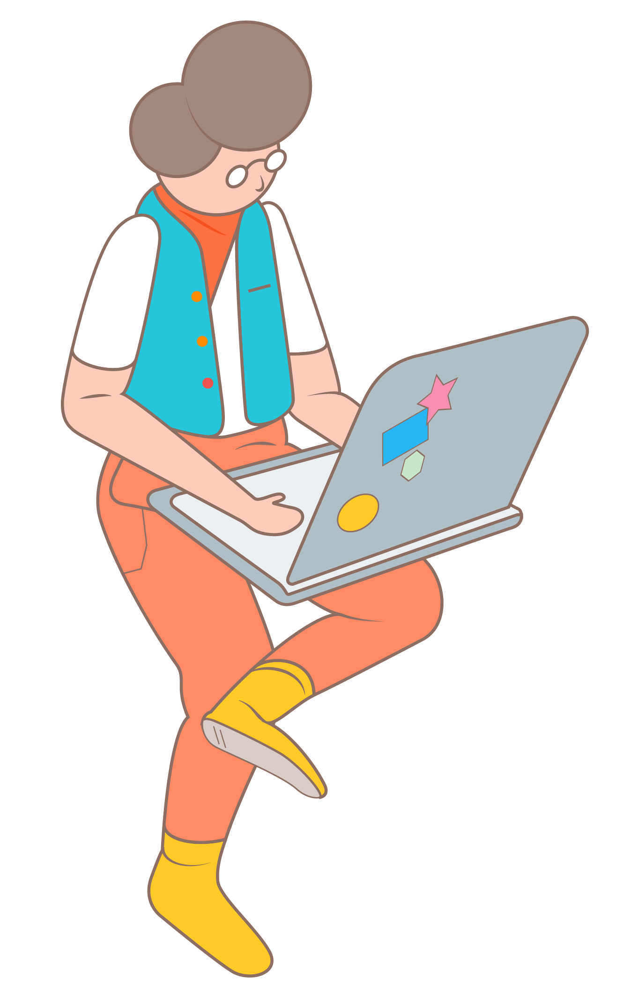

你好啊，我是智榕，目前從事UI設計的工作，很高興見到你。

👨💻 工作經驗
-
iXensor, UI Designer
- 2016/10月 - 現在
-
定點照護血液檢驗系統 / Point of Care Test previous-project
- - 設計手持裝置的 UI/GUI
- - 設計管理後台的 UI/GUI
- - 設計產品網頁
- - 設計可操作的高擬真原型，以 Origami Studio/Bootstrap製作
- - 規劃與分析使用者訪談與易用性測試
-
女性黃體檢測系統 / Women Fertility (LH) Test Project [了解更多]
- - 設計行動裝置UI/GUI，包含 iOS 與 Android 平台
- - 設計分析平台 UI/GUI
- - 利用Origami Studio 製作原型展示給利害關係人，並作為開發前測試用
- - 規劃與分析易用性實驗
- - 專利 (WO2018166533A1 / TW201840293A)
- - 獲獎 : CES Baby Tech 2018, G-Mark 2017
-
血糖監測實驗專案
分析糖尿病患在人工提醒與系統提醒下，量測的行為差異
- - 設計行動裝置介面( iOS )
- - 設計管理後台Web UI/GUI
📖 教育背景
-
研究所
- 國立臺灣科技大學，設計所
- 2008 - 2011
- - Ming Dynasty Chair, 11th Taoyuan Contemporary Art Award (2011)
- - Light-emitting Door, Red Dot Award (2010)
-
教育部設計菁英海外留學計畫
- 日本武藏野美術大學
- 2009 - 20010
- - 京瓷產學合作專案
- - 2011-176646, 日本專利
-
大學
- 國立臺灣科技大學，工商業設計系/工業設計組
- 2004 - 2008
🤹 技能
- - Interaction Design
- - Visual Design
- - Web / Mobile Design
- - Usability Test
- - Japansese / JLPT N1
⚒️ 使用工具
- - Adobe Creative Suite
- - HTML + CSS + jQuery
- - Bootstrap
- - Framer
- - Origami
- - Sketch / Abstract
- - Wordpress